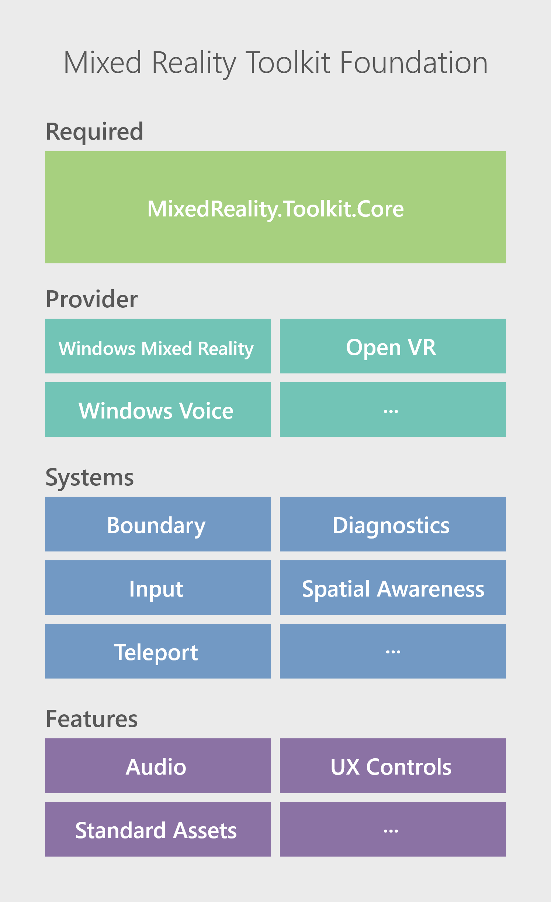

Mixed Reality Toolkit Packages
The Mixed Reality Toolkit (MRTK) is a collection of packages that enable cross platform Mixed Reality application development by providing support for Mixed Reality hardware and platforms.
Mixed Reality Toolkit (MRTK)是包的一个集合，它是为混合现实硬件和平台提供跨平台支持的混合现实应用程序的开发。
MRTK通过下列的Unity包发布:
这些包由微软发布和支持，源码在GitHub上的 mrtk_release 分支.
Foundation Package
Mixed Reality Toolkit Foundation是代码的集合，它使您的应用程序能够利用跨混合现实平台的公共功能。

MRTK Foundation Package
MRTK Foundation 的构成包括:
- Core Package
Core Package 包含所有其他组件使用的所有公共接口、类和数据类型的定义。强烈建议应用程序仅通过定义的接口访问MRTK组件，以实现跨平台的最高兼容性。
- Platform Providers
MRTK Platform Provider 是使MRTK能够针对混合现实硬件和平台功能的组件。
支持的平台包括:
- Windows Mixed Reality
- OpenVR
- Windows Voice
- System Services
Core services 为在Core Package中定义的系统服务接口提供默认实现。
MRTK foundation 包括以下系统服务:
- 边界系统 Boundary System
- 诊断系统 Diagnostic System
- 输入系统 Input System
- 空间感知系统 Spatial Awareness System
- Teleport System
- Feature Assets
Feature Assets 是Unity资源和脚本递送的相关功能的集合，包括用户界面控件、标准资源等等。
是作为Unity资源和脚本交付的相关功能的集合，包括用户界面控件、标准资源等等。
Extensions Package
extensions package 包含扩展foundation包的功能的其他服务和组件。
Examples Package
examples package包含演示、示例脚本和示例场景，它们在foundation package中执行功能。这个包包含手动交互示例场景(如下图所示)，它包含示例对象 响应各种类型的手动输入(全关节手和非全关节手)。

这个包还包含眼动跟踪演示文档在此
更一般地说，MRTK中的任何新特性都应该在examples package中包含一个相应的示例，大致相符相同的文件夹结构和位置。
Tools Package
tools package 包含对创建混合现实体验非常有用的工具，而这些代码最终不会作为应用程序的一部分提交。